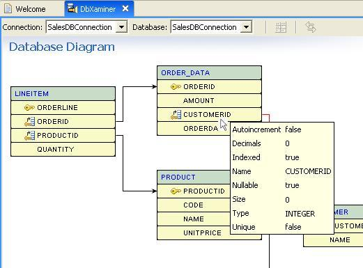

“Stacks” are bundles of software that comprise your site’s back end—everything from the operating system and web servers to APIs and programming frameworks.
A “full”stack includes databases, PHP - scripting language, HTML - markup language for creating websites, CSS - style sheet that describes how HTML looks, JavaScript - dynamic run time language and everything in between, to make the most amazing web sites out there!
"LAMP" stack is an acronym of Linux - OS, Apache- our IDE, MySql (click here for visual), and PHP - scripting language. LAMP is suitable for building dynamic web sites and amazing web applications!.
A database is a collection of information arranged (organized) in an easy-to-access way so it can be easily updated and managed. It is the life-blood of nearly all websites and without them businesses as a whole couldn't even exist today!
MySQL is a database management system, or DBMS. It is the second most popular DBMS and is used in running facebook, twitter, youtube, and even google! It was bought by the number one most popular DBMS owner Oracle and currently remains as a free alternative to other paid DBMS's.
SQL is an acronym for Structured Query Language. It is a programming language and designed for managing data held in a DBMS or RDBMS (Relational Database Management System). It allows the user to send in "queries" to ask questions about the data held in a database. It is cross platform and works with many different DBMS or RDBMS's.
PHP is a recursive acronym for PHP: Hypertext Processor. It is a programming language that securely connects the front end of a client to the back end of a server or database. It can read many different html elements and send the data to a database securely making it the ideal choice for protecting sensitive data. Because PHP is server-side and back end it is impossible for anybody without elevated access to see the data being accessed and sent with PHP.
Has rows and columns, where data is organized in cells (rows are horizontal, columns are vertical). Looks like an Excel spreadsheet, but is actually very different from Excel.
The User Interface for DB's are HTML pages that we create. The CLI is where the power users can see inside of the DB, but in a very primitive non-GUI way. In other words, CLI is for the DB experts, not the users.
mysql> CREATE TABLE myTable (
-> id int(8) PRIMARY KEY NOT NULL AUTO_INT,
-> fname varchar(20),
-> lname varchar(30));